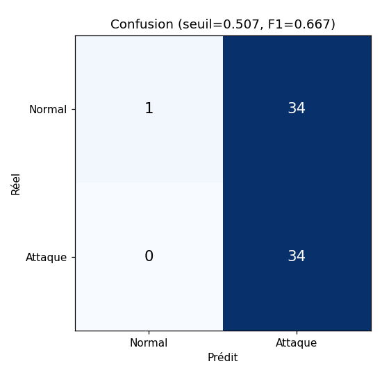
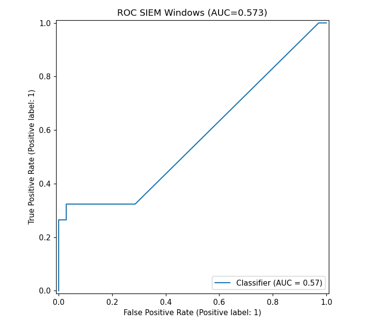
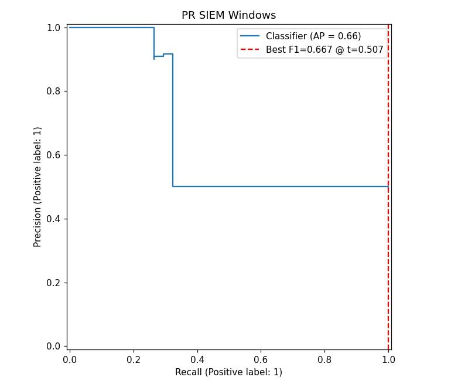
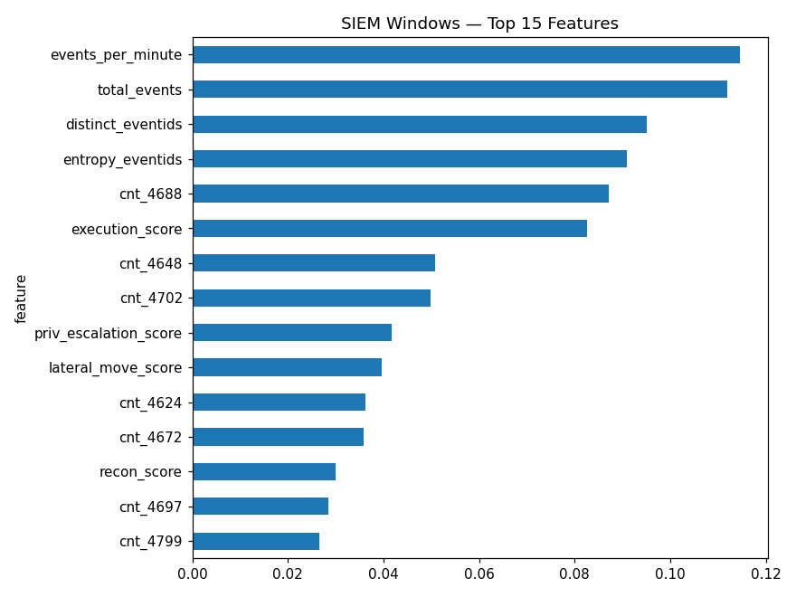
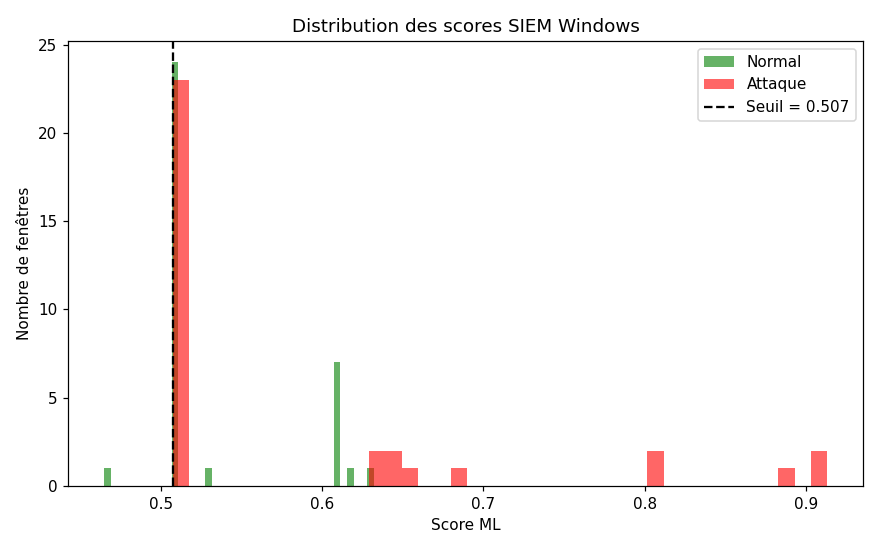
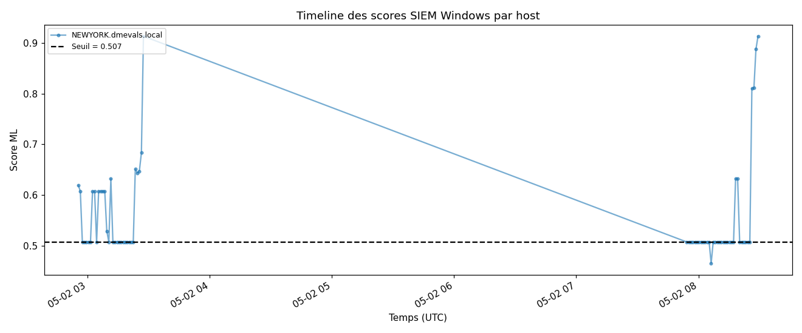

Modèle entraîné sur APT29 day1, évalué sur day2 (split temporel).
Seuil calibré : 0.507
{
"version": 1,
"f1_default": 0.6666666666666666,
"f1_calibrated": 0.6666666666666666,
"best_threshold": 0.5073648971783835,
"roc_auc": 0.573109243697479,
"f1_cv_mean": 0.7451587301587301,
"f1_cv_std": 0.08802313651738547,
"top_feature": "events_per_minute",
"top_feature_importance": 0.11463856584176693,
"leakage_warning": false
}






n_windows score_mean score_max n_alerts n_true_attacks host NEWYORK.dmevals.local 69 0.558942 0.913128 68 34